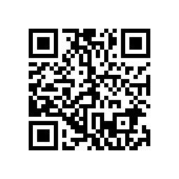

科学组织委员会
Scientific Organising Committee
- 主席
- 王科
- 联合主席
- 钱磊王菁王然
- 委员
- 余先川朱辉
- Chair
- 王科
- Co-chairs
- 钱磊王菁王然
- Members
- 余先川朱辉
简介
平方公里阵列（SKA）是中国参与的下一代射电天文国际合作项目。2026年，SKA发布了新一版科学白皮书，全面展示了SKA的科学潜力。为增进对SKA及其相关科学的了解，促进交流、讨论与合作，北京大学科维理天文与天体物理研究所（KIAA）将2026年度 KIAA Forum 的主题定为“面向SKA的星际介质科学”，以银河系星际介质为主，同时探讨向河外的延伸。
我们诚挚邀请同行就相关的 SKA 科学白皮书内容、SKA 科学预研究，以及 SKA 先导望远镜和有关望远镜上的科学研究进行讨论与交流。
About
The Square Kilometre Array (SKA) is a next-generation international radio-astronomy project in which China participates. In 2026 the SKA released a new science white paper, laying out the scientific reach of the observatory. To deepen understanding of the SKA and the science around it, and to encourage exchange, discussion, and collaboration, the Kavli Institute for Astronomy and Astrophysics (KIAA) at Peking University has made “Interstellar Medium Science for the SKA” the theme of the 2026 KIAA Forum. The forum centres on the interstellar medium of the Milky Way, and on how that science extends to other galaxies.
Colleagues are warmly invited to discuss the relevant parts of the SKA science white paper, preparatory science for the SKA, and research with SKA pathfinder and precursor telescopes and with related facilities.
主题Themes
日期Dates
注册Registration
500 元 / 人CNY / person
注册费现场缴纳。费用包含会议期间每日午餐，以及 12 月 19 日晚在北京大学农园餐厅三楼的晚宴。其余餐饮、住宿和交通费用自理。
请于 12 月 5 日前通过问卷星完成注册。
The fee is paid on site. It covers lunch on each day of the meeting and the conference dinner on the evening of 19 December, on the 3rd floor of Nongyuan Restaurant, Peking University. Other meals, accommodation, and travel are at your own expense.
Please register by 5 December through the form linked here.

议程Programme
将在稍后公布。
To be announced.
委员会Committees
交通Travel
北京大学科维理天文与天体物理研究所（KIAA），北京市海淀区颐和园路 5 号，北京大学校园内，邮编 100871。
在中国境内，谷歌地图上的信息可能不是最新的，建议使用高德地图。
北大校友可持校友卡入校，清华大学参会者可持工作证或学生证入校。其他参会者需要预约入校。如需开车入校，均需预约。
会务不统一安排住宿，其余食宿费用自理。离会场较近的酒店有：
也可预订校园南侧的其他酒店，通过 Booking.com、Expedia、Trip.com 等网站自行预订。
离 KIAA 最近的地铁站是 4 号线北京大学东门站。
以上为正常路况下的白天估计。夜间（23:00–05:00）出租车费通常会上浮。街招出租车请使用计价器。路面高峰容易拥堵。
地铁可使用带闪付标志的银行卡，也可购买单程票，或用支付宝乘车码。公共汽车可用支付宝乘车码，上下车都要扫码。网约车常用滴滴。Uber 不在中国大陆运营。
The Kavli Institute for Astronomy and Astrophysics (KIAA), Peking University, No. 5 Yiheyuan Road, Haidian District, Beijing 100871, China.
Google Maps can be out of date inside China. Amap is the more reliable choice while you are here; it has English labels.
Peking University alumni may enter the campus with an alumni card. Participants from Tsinghua University may enter with a staff ID or student ID. All other participants must reserve campus entry in advance. If you plan to drive onto campus, you must reserve entry in advance, regardless of affiliation.
The meeting does not arrange accommodation. Lodging is at your own expense. Hotels close to the venue include:
Other hotels south of the campus can be booked directly through Booking.com, Expedia, Trip.com, and similar sites.
The nearest subway station to KIAA is Peking University East Gate (北京大学东门) on Line 4.
These are daytime estimates in ordinary traffic. Taxi fares are usually higher from 23:00 to 05:00. On a street-hail taxi, ask the driver to use the meter. Roads are often congested at rush hour.
The subway accepts contactless bank cards. Single tickets and Alipay ride codes also work. Buses can be paid with an Alipay code; scan both when you board and when you get off. Didi is the usual e-hailing app. Uber does not operate in mainland China.